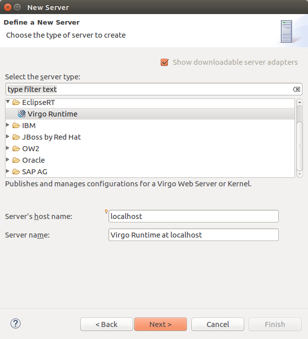
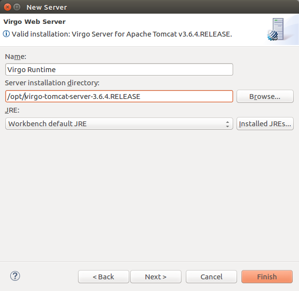
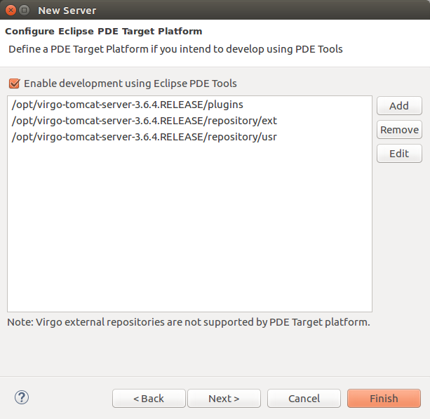
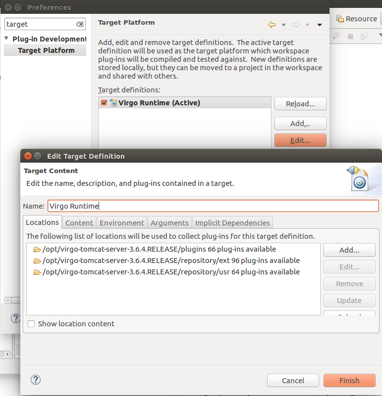
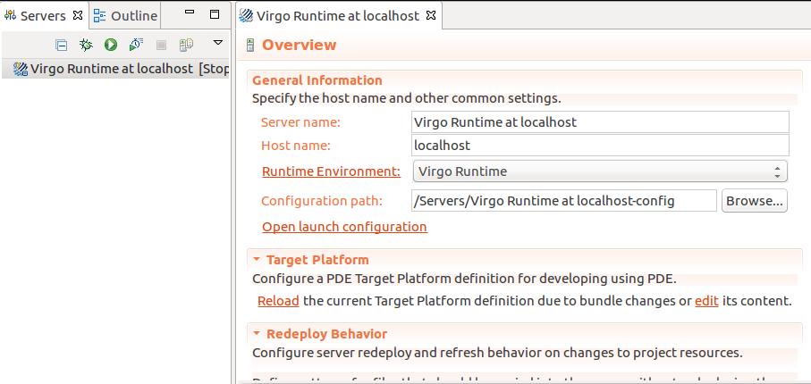

After installing the Virgo Tools in Eclipse it is possible to create a new Server. A Server can be created from the global New dialog, by selecting the Virgo Runtime item within the EclipseRT category. Alternatively, users can right click over the Servers view (easily accessible from the Virgo perspective or via New -> Show View -> Other) and select New to open the same wizard.

In both cases the Server wizard will appear and will ask the user to select a valid Virgo installation from the local file system.

To manage bundle dependencies with PDE make sure to select the check-box in the next page of the wizard:

The wizard will then parse the org.eclipse.virgo.repository.properties file and show to the
user the folders that will be used for setting up the PDE Target Platform definition.
In this page it's possible to include additional folders before pressing Finish.
The folders visible in the picture above are the default content of an unchanged org.eclipse.virgo.repository.properties file plus the server plugins folder
contained in the server home directory. In reality the plugins folder is not a bundle repository and is not listed in the org.eclipse.virgo.repository.properties file.
It contains some core components of the Virgo Runtime Environment and gets included in the Target Platform definition
because at runtime the contained bundles are made available to the deployed applications for dependencies resolution.
Additional folders can be added (or removed if already present in the org.eclipse.virgo.repository.properties file). When the Finish button
is pressed the wizard will create a PDE Target Platform definition and will offer to modify org.eclipse.virgo.repository.properties to reflect any change applied by the user.
The newly created Target Platform will be named after the Server runtime (usually "Virgo Runtime" if not changed by the user in the previous wizard page).
It is possible to double check the content of the newly created PDE Target Platform via the Target Platform preferences page in the Preferences dialog (Window -> Preferences):

The target platform name must match the Server runtime name ("Virgo Runtime" in this example) for the Virgo Tools to be able to correlate the two.

As visible in the above picture, the Server editor, which is easily accessible by double-clicking over the Virgo Runtime Environment in the Server view, provides an new section titled Target Platform which allows reloading the content of the Target Platform definition associated to the current server (useful for example when new bundles are added to the repository) and allows editing the content of the current Target Platform definition by recalling the same UI of the last page of the server creation wizard.